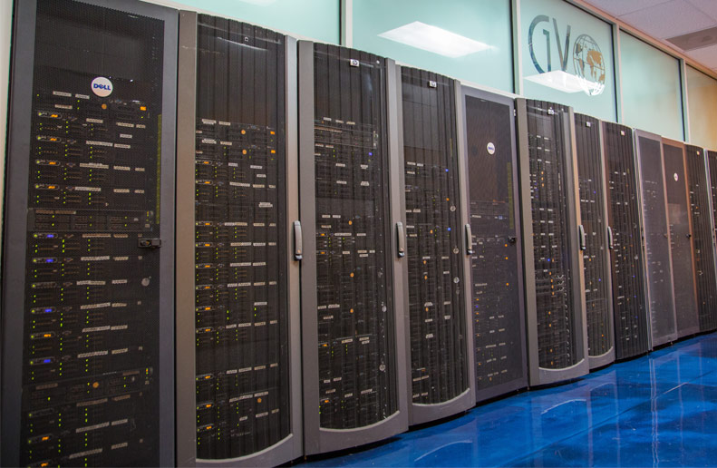

Tu seguridad en la nube es nuestra prioridad

Got Backup utiliza capas adicionales que incluyen funciones de seguridad avanzadas para su protección:
- Integración de Active Directory y NTFS
- Cifrado AES de 256 bits y protocolos SSL/TLS para proteger los datos en reposo y en tránsito.
- Autenticación de dos factores (2FA) e inicio de sesión único (SSO)
- Control de versiones y bloqueo de archivos
- Cifrado del lado del servidor, del lado del cliente y en tránsito
- Refuerzo de la seguridad como la detección de fuerza bruta, CSP y SCC
- Detección de inicios de sesión sospechosos basada en aprendizaje automático
CONOCE AL EQUIPO

Jose Lopez
Director Ejecutivo
Jose Lopez
Director de Operaciones
Luisa Gúzman
Director de Desarrollo
Raul Torres
Director de Apoyo
Tatiana Fuentes
Ingeniero Jefe de Redes